In one word: automation. The less work you have to do when performing repetitive tasks like minification, compilation, unit testing, linting, etc, the easier your job becomes. After you've configured it through a Gruntfile, a task runner can do most of that mundane work for you—and your team—with basically zero effort.
Getting started
Grunt and Grunt plugins are installed and managed via npm, the Node.js package manager.
Installing the CLI
Working with an existing Grunt project
Change to the project's root directory.
Install project dependencies with npm install.
Run Grunt with grunt.
Preparing a new Grunt project
A typical setup will involve adding two files to your project: package.json and the Gruntfile.js
package.json
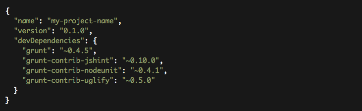
This file is used by npm to store metadata for projects published as npm modules. You will list grunt and the Grunt plugins your project needs as devDependencies in this file.
Gruntfile.js
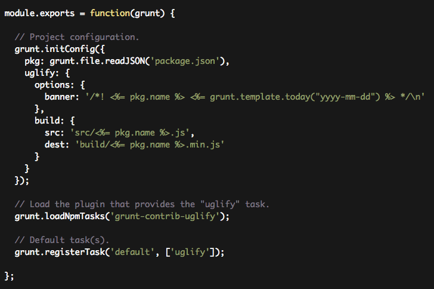
This file is used to configure or define tasks and load Grunt plugins.
The Gruntfile
A Gruntfile is comprised of the following parts:
The "wrapper" function
Project and task configuration
Loading Grunt plugins and tasks
Custom tasks
The "wrapper" function
Every Gruntfile (and gruntplugin) uses this basic format, and all of your Grunt code must be specified inside this function:
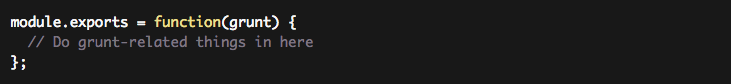
Project and task configuration
Most Grunt tasks rely on configuration data defined in an object passed to the grunt.initConfig method.
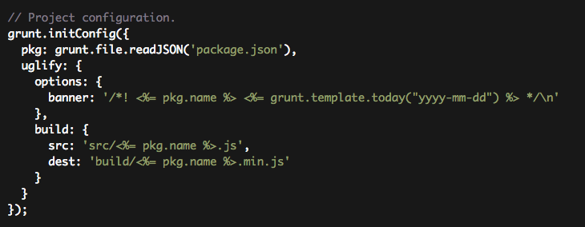
Loading Grunt plugins and tasks
Many commonly used tasks like concatenation, minification and linting are available as grunt plugins. As long as a plugin is specified in package.json as a dependency, and has been installed via npm install, it may be enabled inside your Gruntfile with a simple command.
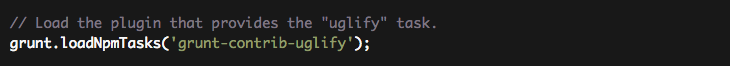
Custom tasks
You can configure Grunt to run one or more tasks by default by defining a default task.
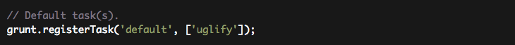
Configuring tasks
Grunt Configuration
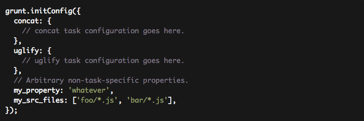
Task Configuration and Targets
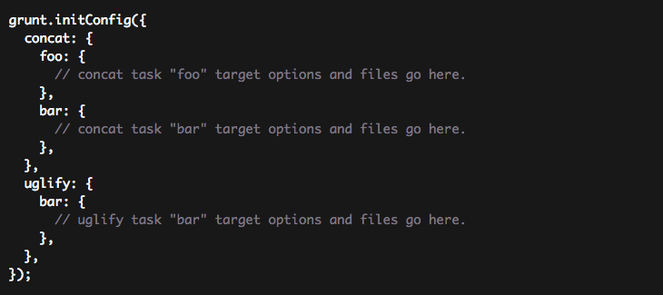
Options
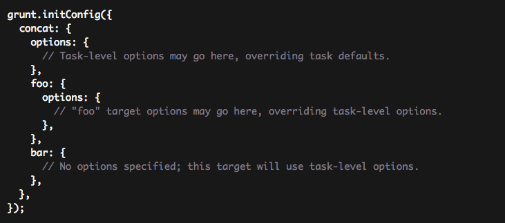
Files
Compact Format
A single src-dest (source-destination) file mapping per-target.
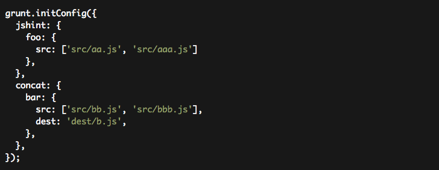
File Object Format
A multiple src-dest file mapping per-target.
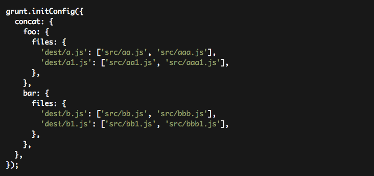
File Array Format
Supports multiple src-dest file mappings per-target, while also allowing additional properties per mapping.
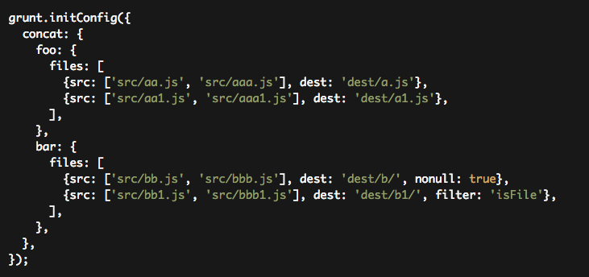
Templates
Templates specified using <% %> delimiters will be automatically expanded when tasks read them from the config. Templates are expanded recursively until no more remain.